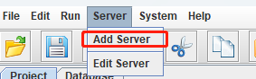
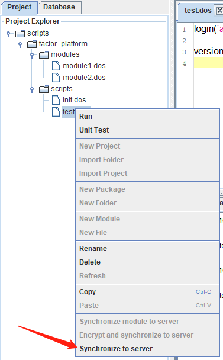

GUI 客户端
DolphinDB GUI 客户端是基于 Java 的图形化编程以及数据浏览界面，可在任何支持 Java 的操作系统上使用，例如：Windows、Linux、Mac。该客户端运行速度快，功能齐全，用户友好，适用于管理和开发 DolphinDB 脚本、模块，以及数据库交互，查看运行结果等。
用户能够在 GUI 客户端进行以下操作：查找/替换文本、保留字高亮显示、系统函数提示、行号显示，选择部分代码执行、执行结果浏览、查看 log 信息、临时变量浏览、数据库浏览。通过 Project 浏览器，可以浏览所有项目。通过 Database 浏览器，可以浏览所有 DFS 数据库以及其分区表的 schema。此外，用户能够通过界面中的下拉列表选择已建立的 session，使用 SQL 语言进行脚本编写的用户能够从 SQL 方言兼容性列表中为当前 session 选择 MySQL、Oracle 或 DolphinDB 作为兼容的 SQL 方言。
安装与启动
在启动 GUI 前，需要确保：
-
安装 Java 运行环境。推荐使用 64 位的 Java 8 版本。如需查看 Java 的版本信息，可在命令行中使用 java -version 命令，符合要求的 Java 版本如下：
> java -version java version "1.8.0_121" Java(TM) SE Runtime Environment (build 1.8.0_121-b13) Java HotSpot(TM) 64-Bit Server VM (build 25.121-b13, mixed mode)若版本信息的最后一行如下，那么 DolphinDB GUI 无法正常启动。
Java HotSpot(TM) Client VM - 已将 JRE（Java Runtime Environment） 添加至系统路径中。
DolphinDB GUI 在 Windows 环境下，双击 gui.bat 即可直接运行。
在 Linux 和 Mac 环境下，在 Terminal 中使用 cd 命令前往 GUI 压缩包解压后的目录后输入：
./gui.sh
以下为 DolphinDB GUI 的主要功能：
Server
GUI 菜单中的 server 是指 DolphinDB 数据库服务器。
点击 Add Server，添加需要连接的 DolphinDB Server 节点。
填写以下 Server 信息：
- Name 这个节点在本地添加的 Server 列表中的唯一标识。
- Host DolphinDB Server 所在的服务器 IP 。
- Port DolphinDB Server 待连接节点的端口号。
- Remote Directory 远端目录，数据同步功能的目的路径。可以是绝对路径或相对路径，其中相对路径相对于 <HomeDir> 。<HomeDir> 可通过函数 getHomeDir 获取。
- Username 登录用户名。
- Password 登录密码。
点击 Test 可以测试是否可与目标节点连接成功。
确认上述信息无误后，可以点击 Add 完成本次添加。
完成添加后，会自动出现在 server 下拉菜单中。
Log in（登录）
登录数据库服务器主要有三种方法：
- 在添加 server 的时候指定用户名和密码。默认的管理员初始账号和密码为：admin/123456。
- 点击界面中的 按钮
-
在脚本中使用
login函数
Workspace（工作空间）
第一次启动 GUI 时，用户需指定 workspace 路径，用于项目管理。Workspace 下面可以有多个项目。一个用户只能同时使用一个 workspace。
Project（项目管理）
指定 workspace 后，可以通过右击 workspace，点击 New Project 来创建新的项目，也可以通过 Import Folder 或 Import Project 导入已有的项目。
File（文件管理）
创建 project 后，用户可以在新建 project 下通过 New Folder 创建脚本目录，并在新建文件夹下通过 New File 生成脚本文件。脚本文件创建之后，即可通过编辑器来编写、修改、执行脚本。
运行
GUI 编程界面提供代码查询、修改、高亮显示、函数提示等功能。用户可以选择部分代码执行，也可以点击文件执行代码。执行完毕，可以立刻看到执行结果，以及查看所有的局部变量和共享变量的值。
Synchronize to Server（数据同步）
在远端服务器上执行一个脚本文件或者调用了一个 module 都会在该服务器上查找对应的脚本文件。当 GUI 和 DolphinDB server 不在一个机器上时，可能需要把本地最新编辑的脚本文件同步到远程服务器上。为此，DolphinDB 提供了 Synchronize to Server，即文件同步功能。在项目浏览器中右击需要同步的目录或者文件，并选择 Synchronize to server，将其传送到服务器的对应目录。
通过以下方式指定 Remote Directory 后才可使用文件同步功能：
- 添加远程服务器时通过 Remote Directory 指定相应目录；需要注意，远端服务器的用户必须拥有创建 Remote Directory 的权限。
- 若上步中未指定，则可通过 Server > Edit Server 菜单来指定。
举个例子，如果将 Remote Directory 设置为 "/home/usr1"，并且需要同步的本地文件名是 "C:/users/usr1/Project/scripts/test.dos"，那么系统会在远端自动创建目录和相应文件 "/home/usr1/Project/scripts/test.dos"。
常见问题
- 无法正常启动
如果 DolphinDB GUI 无法正常启动，可能有以下三个原因：
- 没有安装 Java。Java 下载地址：https://www.oracle.com/technetwork/java/javase/downloads/index.html。
-
Java 不在系统路径中。在 Windows 环境下，需要查看是否在
Path中；在 Linux 环境中，需要查看是否在PATH中。 -
安装的 Java 版本不符合要求。DolphinDB GUI 使用环境需要 64 位 Java 8
及以上版本。32 位的 Java 即使版本正确，由于不支持 Server 模式，只有 Client 模式，将无法启动
GUI。我们可以在命令行中使用
java -version命令查看 Java 的版本信息。符合要求的 Java 最低版本为 1.8.0。例如：java -version java version "1.8.0_121" Java(TM) SE Runtime Environment (build 1.8.0_121-b13) Java HotSpot(TM) 64-Bit Server VM (build 25.121-b13, mixed mode)
如果版本信息的最后一行如下，那么 DolphinDB GUI 将无法正常启动。
Java HotSpot(TM) Client VM
- 如何处理包含中文字符的脚本中的乱码
如果中文显示出现乱码，需要在 File > Preferences 中设置中文字体，例如微软雅黑（Microsoft Yahei）。 然后使用
print命令查看输出结果，乱码会消失。 - 如何修改小数点后的精度显示
DolphinDB GUI 默认的小数点后精度是 4 位。如需调整，在 File > Preferences > Default number of decimal places 中修改，例如修改为 8。
- 处理内存溢出（OOM）错误
如果出现
java.lang.OutOfMemoryError: Java heap space的错误信息，说明 GUI 的默认 2048MB 启动内存不能满足实际运行需要而导致内存溢出。可以通过修改 gui/gui.bat 或者 gui/gui.sh 中的-Xmx启动参数来扩大内存。例如：start javaw -classpath dolphindb.jar;dolphingui.jar;jfreechart-1.0.1.jar;jcommon-1.0.0.jar;jxl-2.6.12.jar;rsyntaxarea.jar;autocomplete.jar -Dlook=cross -Xmx4096m com.xxdb.gui.XXDBMain